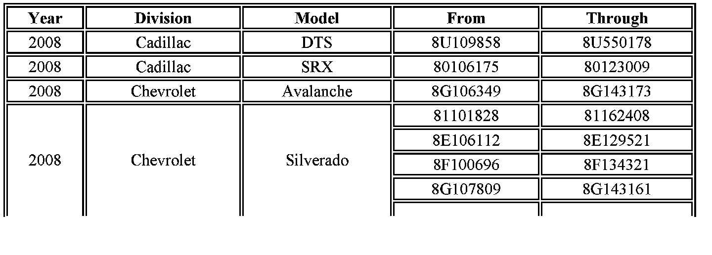
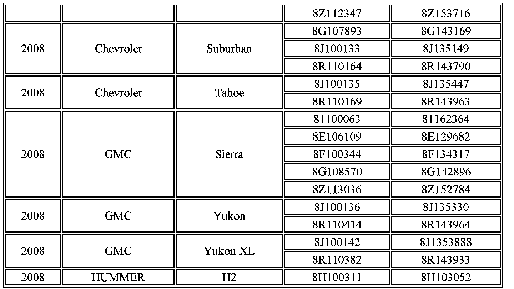

Campaign - Navigation System DVD Upgrade: Overview
Subject:Customer Satisfaction - Navigation System DVD Upgrade
# 07268 - (09/25/2007)
Models:
2008 Cadillac DTS, SRX
2008 Chevrolet Avalanche, Silverado, Suburban, Tahoe
2008 GMC Sierra, Yukon, Yukon XL
2008 HUMMER H2
Equipped with Touch-Screen Navigation System (RPO UVB/U3U/U2V/U3R)
Condition
On certain 2008 model year Cadillac DTS, SRX; Chevrolet Avalanche, Silverado, Suburban, Tahoe; GMC Sierra, Yukon, Yukon XL: and HUMMER H2 vehicles equipped with a touch-screen navigation system (RPO UVB/U3U/U2V/U3R), the map DVD may contain a slight ripple in the surface. This may cause a slow response to a command (i.e., hard key press), freeze the navigation screen, or display a DVD read error message.
Correction
Dealers are to replace the map DVD.
Vehicles Involved


Involved are certain 2008 model year Cadillac DTS, SRX; Chevrolet Avalanche, Silverado, Suburban, Tahoe; GMC Sierra, Yukon, Yukon XL; and HUMMER H2 vehicles built with a touch-screen navigation system and built within the VIN breakpoints shown.
IMPORTANT:
Dealers are to confirm vehicle eligibility prior to beginning repairs by using the GM Vehicle Inquiry System (GMVIS). Not all vehicles within the above breakpoints may be involved.
For dealers with involved vehicles, a listing with involved vehicles containing the complete vehicle identification number, customer name, and address information has been prepared and will be provided through the applicable system listed below. Dealers will not have a report available if they have no involved vehicles currently assigned.
-- US dealers - GM DealerWorld Recall Information
-- Canadian dealers - GMinfoNet Recall Reports
The listing may contain customer names and addresses obtained from Motor Vehicle Registration Records. The use of such motor vehicle registration data for any purpose other than follow-up necessary to complete this program is a violation of law in several states/provinces/countries. Accordingly, you are urged to limit the use of this report to the follow-up necessary to complete this program.
Parts Information
Map DVDs will be mailed directly to dealers for vehicles in inventory beginning Monday, September 24, 2007. Customers will be mailed a new DVD. The new map DVDs are marked by either 1) a white dot or square on the DVD case, 2) the letter "U" following the part number on the DVD and the case, or 3) a black dot before and after the country name located on the DVD.
Additional map DVDs can be obtained from the GM Nav Disc Center by calling 1-877-NAV-DISC or 1-877-628-3472. Do not order DVDs from General Motors Service and Parts Operations (GMSPO).
Service Procedure
1. Remove the old map DVD from the plastic case in the vehicle.
2. Replace the old map DVD with the new map DVD. The new map DVDs are marked by either 1) a white dot or square on the DVD case, 2) the letter "U" following the part number on the DVD and the case, or 3) a black dot before and after the country name.
3. Place all of the old map DVDs into the same box used to ship the new map DVD.
4. Return the box of old map DVDs via the pre-paid shipping label that came with the new discs.
Claim Information

Submit a Product Claim with the information shown.
Customer Notification
General Motors will notify customers of this program on their vehicle (see copy of customer letter shown in this bulletin).
Dealer Program Responsibility
All unsold new vehicles in dealers' possession and subject to this program must be held and inspected/repaired per the service procedure of this program bulletin before customers take possession of these vehicles.
Dealers are to service all vehicles subject to this program at no charge to customers, regardless of mileage, age of vehicle, or ownership, from this time forward.
Customers who have recently purchased vehicles sold from your vehicle inventory, and for which there is no customer information indicated on the dealer listing, are to be contacted by the dealer. Arrangements are to be made to make the required correction according to the instructions contained in this bulletin. A copy of the customer letter is shown in this bulletin for your use in contacting customers. Program follow-up cards should not be used for this purpose, since the customer may not as yet have received the notification letter.
In summary, whenever a vehicle subject to this program enters your vehicle inventory, or is in your dealership for service in the future, you must take the steps necessary to be sure the program correction has been made before selling or releasing the vehicle.

Disclaimer